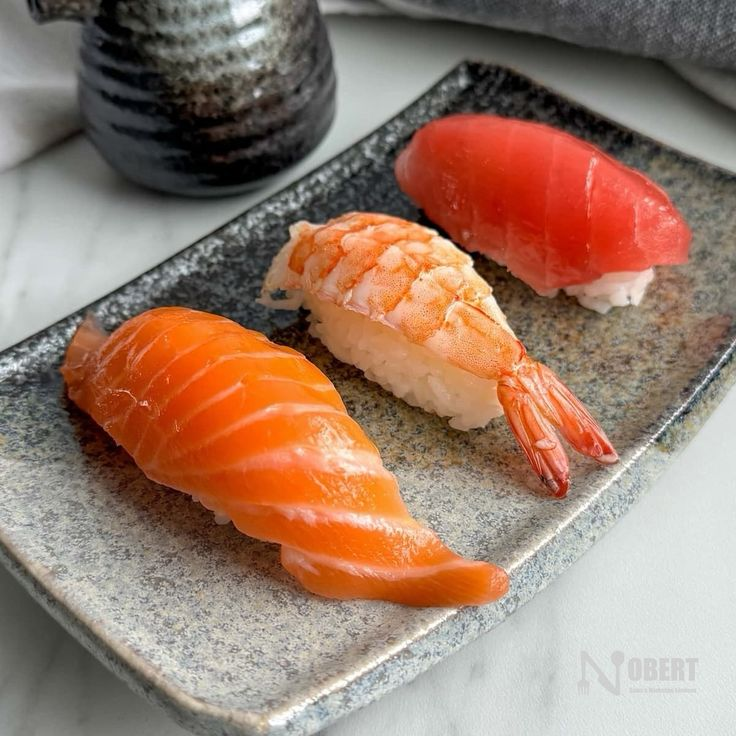
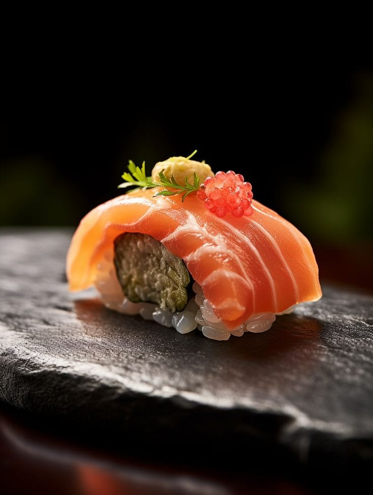
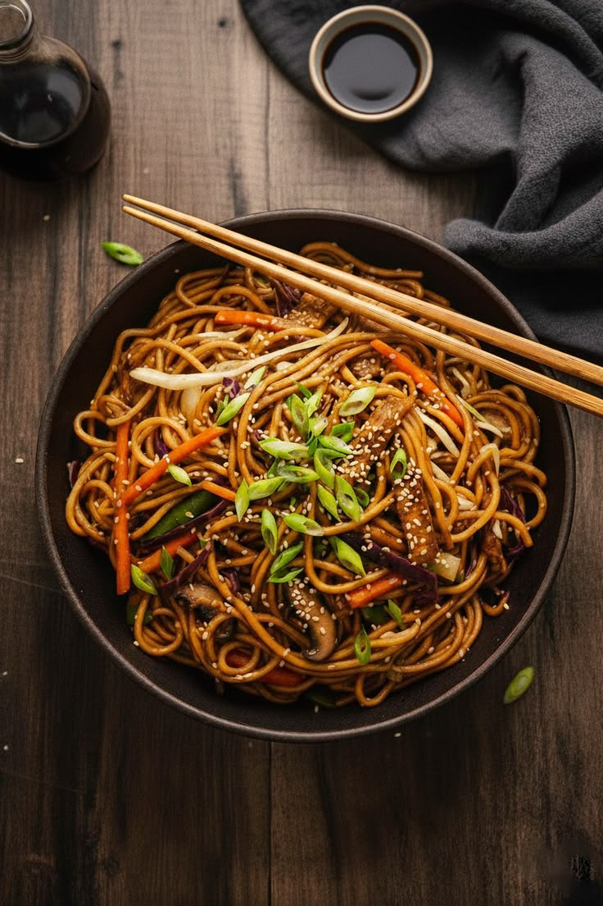
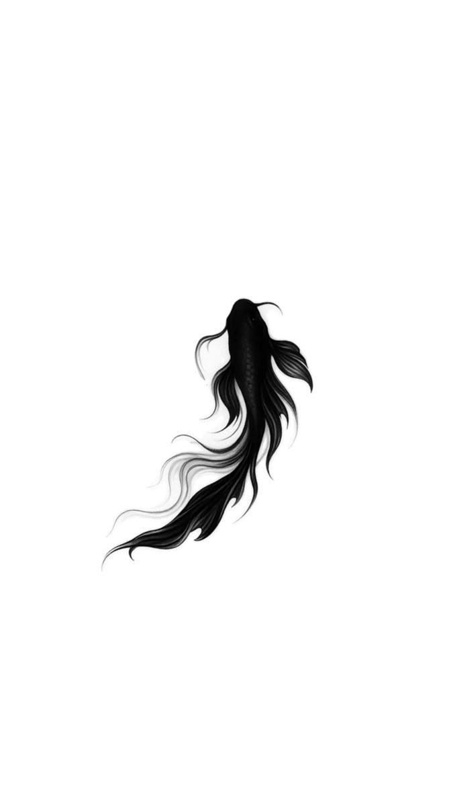
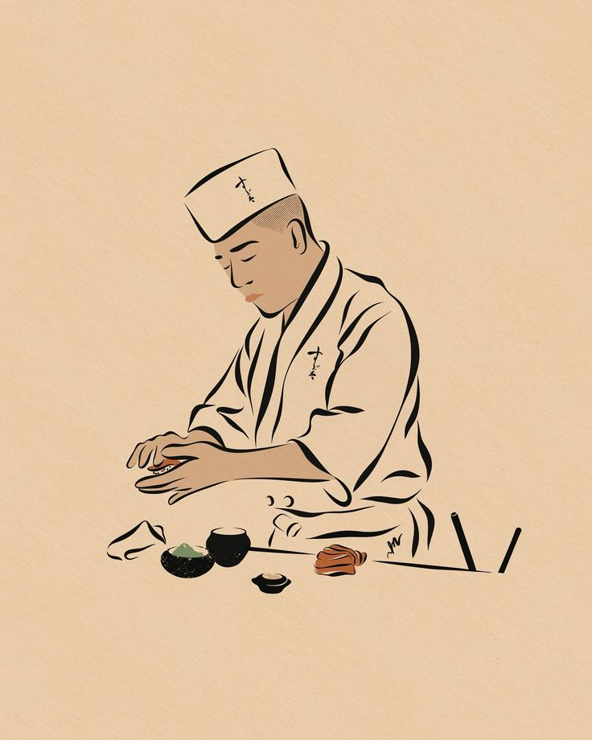
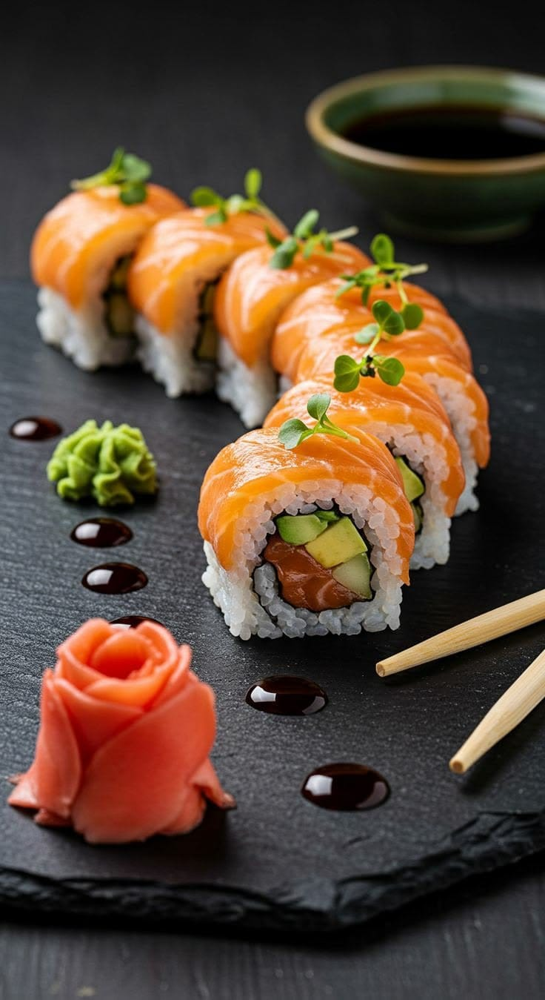
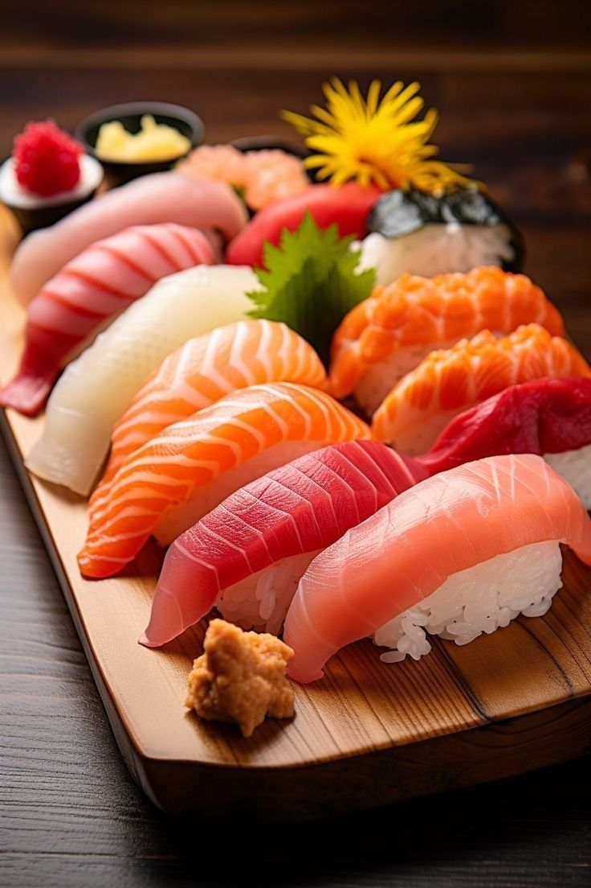
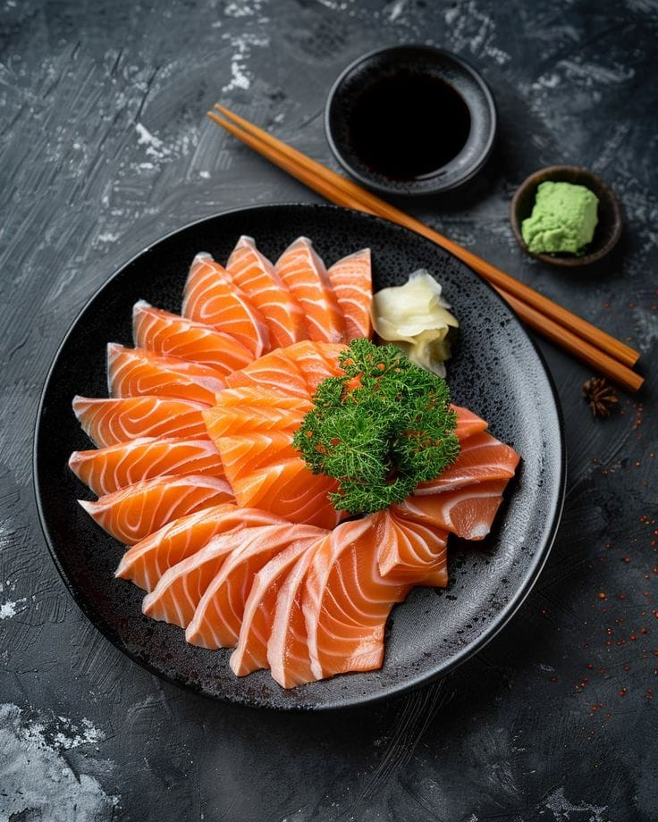

مكونات طازجة، نكهة جريئة
استمتع بفن السوشي الأصيل، ممزوجًا بحرارة الووك الجريئة — منيو مبني على مكونات طازجة والتزام لا يساوم.
استمتع بنقطة التقاء عالمين من المطبخ: دقة وحرفية السوشي، وحرارة طهي الووك الجريئة، مجتمعين في أطباق راقية لا تُنسى.



تُقلى بسرعة وتُقدَّم بجرأة — أطباق الووك المميزة عندنا تجمع بين خضار طازجة، لحوم مقطعة يدويًا، وصوص مميز لنكهة لا تُخطئها.
اعرف أكتر
بخبرة ١٠ سنوات، الشيف تاكومي ناكامورا بيقدّم دقة وانضباط وشغف مالهوش مثيل في كل طبق بيخرج من المطبخ.

كل طبق بيبدأ من اختيار المكونات — مكونات موسمية مختارة يدويًا، بتتعامل معاها بنفس الاهتمام سواء قابلت نار الووك أو سكينة السوشي.
النتيجة منيو بيحترم التقاليد وفي نفس الوقت مش خايف يفاجئك: نكهات جريئة، متعددة الطبقات، وطازة دايمًا.



تصفح بعضاً من أطباقنا المميزة. كل صورة هنا تروي قصة اهتمامنا بالتفاصيل وحرصنا على تقديم لوحة فنية تسر العين قبل المعدة.